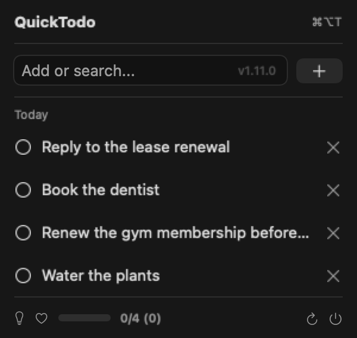
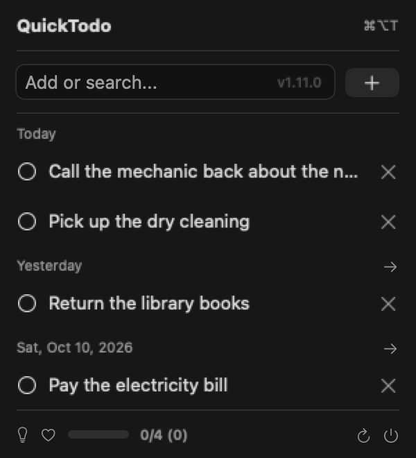
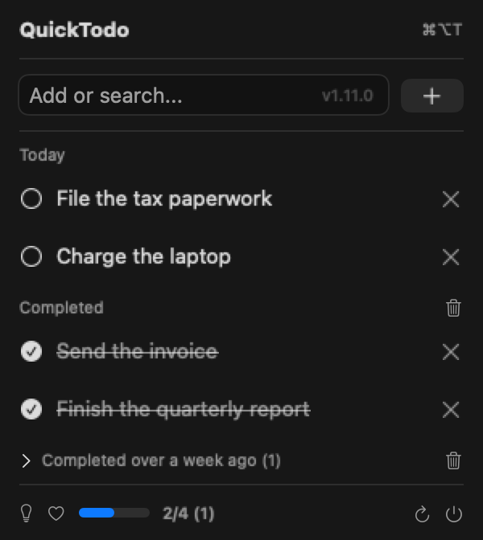
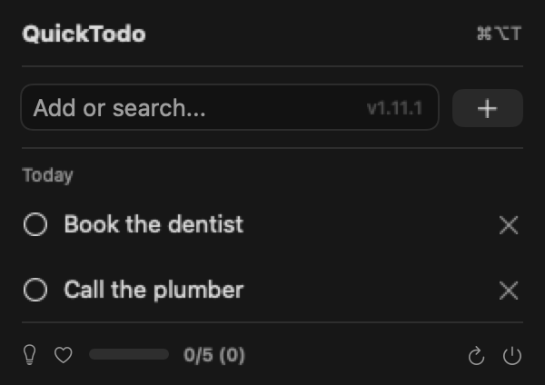
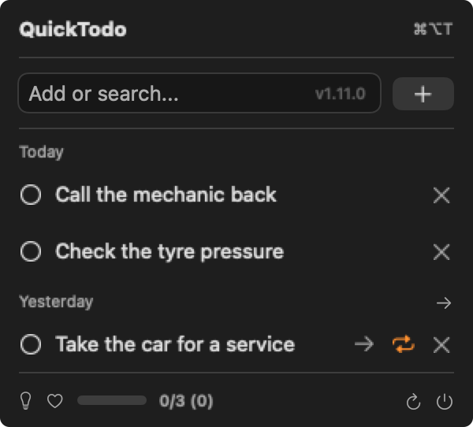
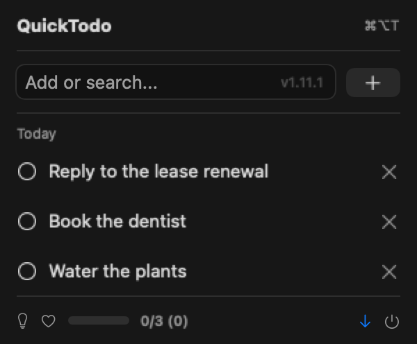
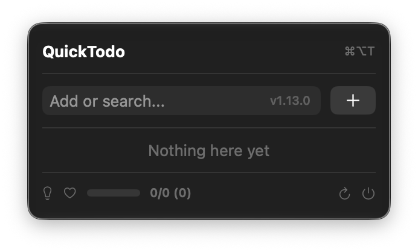

Free · Open source · macOS 13+
QuickTodo is a native Mac todo app that lives where your clock already is. Hit ⌘⌥T, type, press Return. No window to manage, no account, no Electron.
brew install --cask quicktodo
Install details and the no-Homebrew route below.

Recommended — and the update path that just works.
brew tap mdopeace/quicktodo
brew install --cask quicktodo
You don't have to upgrade this yourself — QuickTodo checks for updates on launch and every few hours when you open the menu, then downloads, verifies and installs in place from its footer button.
Prefer brew? brew update && brew upgrade quicktodo does the same thing.
Grab the .app straight from Releases.
↓ Download for macOSquicktodo.app into ApplicationsThe build is ad-hoc signed and not notarized, so the first launch needs right-click → Open (or xattr -dr com.apple.quarantine /Applications/quicktodo.app). Homebrew installs skip this.






⌘⌥T brings the list up without touching the Dock.
Daily or weekly. Finishing one creates the next.
Overdue todos, one row or a whole day at once.
Type in the same box you add with.
Reorder within a day. VoiceOver actions too.
Verifies the download and installs it in place.
Yes — MIT licensed, and the source is on GitHub. No account, no trial, no upsell.
Nowhere. One JSON file in your own Application Support folder. Nothing is uploaded anywhere.
It isn't notarized. Right-click the app → Open once, and macOS stops asking.
It checks on launch, and at most once every few hours when you open the menu. The footer button then downloads, verifies and installs.
Yes, release builds register as a login item. Turn it off in System Settings → General → Login Items.
macOS 13 or newer, Apple Silicon or Intel. Nothing else.